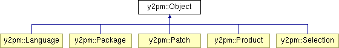
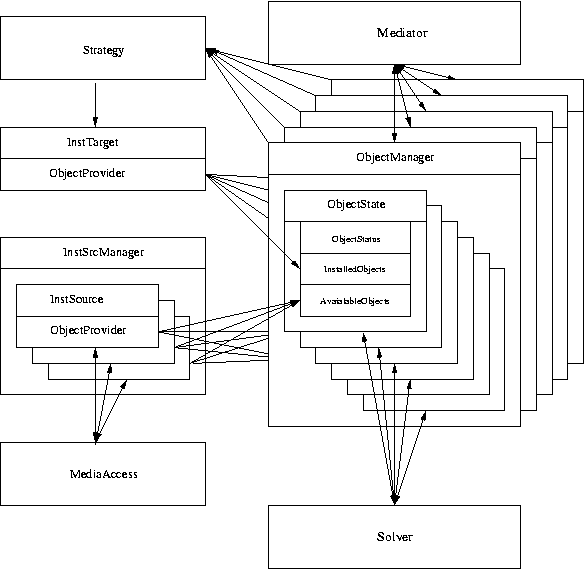
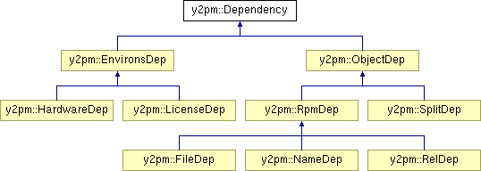

Objects
There are various kinds of Objects Y2PM has to deal with:

These Object are identified by:
- name
- edition
- architecture
There are dependencies between Objects:
- prerequires
- requires
- provides
- conflicts
- obsoletes
- suggests
- recommends
Associated with an Object is a State and possible state changes:
- installed / not installed
- install / replace / delete
Objects are provided by:
- The InstTarget - The system Y2PM maintains, providing installed Objects.
- InstSources - Objects available for installation may be found at various
locations. Basically everything that is somehow able to provide the Objects
basic data may serve as an InstSource.
Y2PM tasks:
- Provide easy and common access to installed and available Objects.
- Support analysis of the current systems state and the effect of
Object state changes.
- Solver - Maintain dependencies within none class of Objects.
- Mediator - Maintain depedencies between different Object classes.
E.g. installing a Selection will actually install Packages and may
lead to a new Product being avilable ond the System.
- Provide the strategies to actually apply the state changes.
Further requirements:
- Interface design and documentation.
- Binary comatibility
- Extensibility
Framework

Solver
Solver extensions:
- Handle recommends and suggests.
- Interaction between Solver and Dependency.

Interaction? The current Solver knows 'how' to check e.g. a requirement.
A requirement is fullfilled, if another Object provides it. But first of
all the Solver is interested 'if' a requirement is fullfilled.
Introducing new requirements like 'require TV-Card' or 'require licenceconfirm'
require changes to the Solver, or other kinds of workarounds. Dummy Objects
providing 'TV-Card' or 'licence confirmed for package foo' for example. Or,
the application is responsible for checking those requirements before
Objects get installed.
An improved Solver would be able to 'ask' dependencies whether they are
fullfilled. 'require licenceconfirm' could then try to ask the user for
confirmation, and dependent on the answer say 'yes' or 'no'.
This would ease introducing new Dependencies without changing the Solver code.
It would support introducing different Solver levels. More relaxed in sw_single,
but strict before commit. A LicenseDependency could then keep quiet until
solving for commit.
We already introduced specialized dependencies: SplitDependencies. They are
currently evaluated on Update only. As the Solver does not handle them, the
UpdateStrategy has to take care of them. But actually thats the wrong location.
MediaAccess
MediaAccess provides transparent access to a physical media.
- CD/DVD
- NFS
- FTP
- HTTP/HTTPS
- SMB/CIFS
- local directory
MediaAccess is mainly used by InstSources to acess the data. The InstSource
knows layout and location of the data. MediaAccess knows how to acess them.
Desired extensions
- URI parsing.
- Device management for CD/DVD
- Download management for FTP/HTTP/HTTPS
- Asynchronous data retrieval and caching.